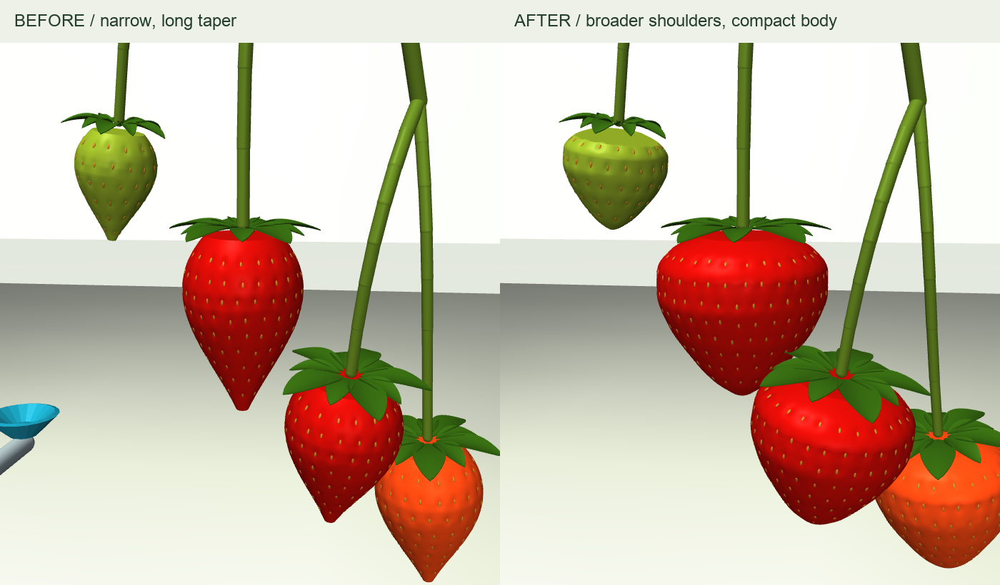

Fuller shoulders. A shorter, rounded tip.
The main berry is now about 34 mm long × 35 mm wide. The whole plant uses the new fruit collision shapes and recomputed centers of mass and inertia. These proportions are modeling choices to review, not a measured cultivar fit.
Fresh gravity settling with the existing elastic/damped stalk and leaf model. The view starts at the settled end of the recording.
Same camera and scale

Geometry and physics together
The new profile drives both visible skin and rigid collision shape. Previous fruit masses and the full plant's attachments, stiffness and damping carry over. It settled for 20 simulated seconds after the change.
Shape, mass and inertia audit · Settling reportFresh contact check
A force-limited probe touches the berry and withdraws. Peak normal contact force was 0.60 N, with 0.17 mm maximum probe contact penetration. No solver warnings or penetrations over 1 mm were recorded. The matched control disables only probe contact.
Contact report · Control reportAssumptions, references and remaining work
This is a rigid-fruit contact diagnostic, not PPO or a harvesting demonstration. Surface dimples are visual detail. Net deformation, stem cutting, flesh indentation and bruising remain unfinished. Recovery-study/v2 retains the alternative material hypotheses; this test uses the original elastic/damped baseline.
Cal Poly fruit anatomy · Fruit shape research · Method and reproduction · Preserved previous shape